65
UNIDADE 2 - CAPÍTULO 3
CAPÍTULO 3 - Potenciação e raiz quadrada
Potenciação envolvendo números positivos e negativos
Lúcia aproveitou o dia do amigo e mandou uma mensagem por e-mail para Ana e Isabel. Ana e Isabel gostaram da ideia e ambas enviaram a mensagem para mais duas amigas, sendo que cada uma dessas amigas enviou a mensagem para mais duas. Quantas mensagens foram enviadas?

1. Troque ideias com um colega e representem, no caderno, um esquema para mostrar a quantidade de mensagens que foram enviadas.
a) Podemos representar a quantidade de mensagens enviadas por meio de potências? Represente-as e calculem quantas mensagens foram enviadas.
Para resolvermos determinadas situações, podemos utilizar o cálculo envolvendo potências.
A potenciação é uma multiplicação de fatores iguais.
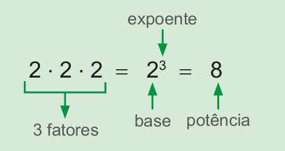Vejamos, agora, como resolver uma potência quando a base é um número negativo. Vamos utilizar a definição de potência. Observe:
a) \((-3)^{1} = -3\)
b) \((-3)^{2} = (-3) \cdot (-3) = 9\)
c) \((-3)^{3} = (-3) \cdot (-3) \cdot (-3) = 27\)
d) \((-3)^{4} = (-3) \cdot (-3) \cdot (-3) \cdot (-3) = 81\)
e) \((-3)^{5} = (-3) \cdot (-3) \cdot (-3) \cdot (-3) \cdot (-3) = 243\)
f) \((-3)^{6} = (-3) \cdot (-3) \cdot (-3) \cdot (-3) \cdot (-3) \cdot (-3) = 729\)
UNIDADE 2 - CAPÍTULO 3
66
Agora, vejamos outro exemplo:
a) \( \left(-\dfrac{1}{2}\right)^{1} = -\dfrac{1}{2} \)
b) \( \left(-\dfrac{1}{2}\right)^{2} = \left(-\dfrac{1}{2}\right) \cdot \left(-\dfrac{1}{2}\right) = \dfrac{1}{4} \)
c) \( \left(-\dfrac{1}{2}\right)^{3} = \left(-\dfrac{1}{2}\right) \cdot \left(-\dfrac{1}{2}\right) \cdot \left(-\dfrac{1}{2}\right) = -\dfrac{1}{8} \)
d) \( \left(-\dfrac{1}{2}\right)^{4} = \left(-\dfrac{1}{2}\right) \cdot \left(-\dfrac{1}{2}\right) \cdot \left(-\dfrac{1}{2}\right) \cdot \left(-\dfrac{1}{2}\right) = \dfrac{1}{16} \)
e) \( \left(-\dfrac{1}{2}\right)^{5} = \left(-\dfrac{1}{2}\right) \cdot \left(-\dfrac{1}{2}\right) \cdot \left(-\dfrac{1}{2}\right) \cdot \left(-\dfrac{1}{2}\right) \cdot \left(-\dfrac{1}{2}\right) = \dfrac{1}{32} \)
f) \( \left(-\dfrac{1}{2}\right)^{6} = \left(-\dfrac{1}{2}\right) \cdot \left(-\dfrac{1}{2}\right) \cdot \left(-\dfrac{1}{2}\right) \cdot \left(-\dfrac{1}{2}\right) \cdot \left(-\dfrac{1}{2}\right) \cdot \left(-\dfrac{1}{2}\right) = \dfrac{1}{64} \)
2. Troque ideias com um colega e observem os sinais do valor das potências em relação aos seus expoentes. Discutam sobre as conclusões a que vocês chegaram com seu professor.
a) No caderno, construam um quadro para resumir as conclusões a que vocês chegaram sobre a relação entre os sinais do valor das potências e seus expoentes. Vejam o modelo a abaixo:
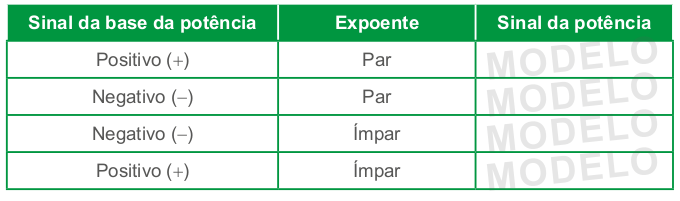Expoente 1 e 0 (zero)
Quando o expoente é igual a 1, a potência é igual a própria base.
UNIDADE 2 - CAPÍTULO 3
67
► \((-13)^{1} = -13\)
► \((-0,5)^{1} = -0,5\)
► \( \left(-\dfrac{1}{3}\right)^{1} = - \dfrac{1}{3} \)
Quando o expoente é igual a 0 (zero) e a base é diferente de zero, a potência é igual a 1.
► \((-13)^{0} = 1\)
► \((0,5)^{0} = 1\)
► \( \left(-\dfrac{1}{3}\right)^{0} = 1 \)
Atenção!
► \((-7)^{2} \mathrlap{\,/}{=} -7^{2}\), pois
\((-7)^{2} = (-7) \cdot (-7) = 49\)
\(-7^{2} = -(7 \cdot 7) = -49\)
► \((-1,2)^{2} \mathrlap{\,/}{=} -1,2^{2}\), pois
\((-1,2)^{2} = (-1,2) \cdot (-1,2) = 1,44\)
\(-1,2^{2} = -(1,2 \cdot 1,2) = -1,44\)
Algumas propriedades da potenciação
Multiplicação de potências de mesma base
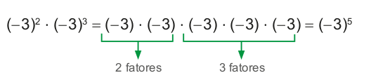Ou seja,
\((-3)^{2} \cdot (-3)^{3} = (-3)^{2+3} = (-3)^{5}\)
![Exemplo de multiplicação de potências de mesma base. (Menos um quinto) elevado à quarta potência vezes (menos um quinto) elevado à segunda potência igual (menos um quinto) vezes (menos um quinto) vezes (menos um quinto) vezes (menos um quinto) vezes (menos um quinto) vezes (menos um quinto) igual (menos um quinto) elevado a sexta potência. Abaixo da operação uma flecha indica os quatro primeiros (menos um quinto) como 4 fatores. Uma outra flecha indica a sequência dos 2 próximos (menos um quinto) como 2 fatores.](../../resources/images/unidade2/capitulo3/imagem5.png)
Ou seja,
\( \left(-\dfrac{1}{5}\right)^{4} \cdot \left(-\dfrac{1}{5}\right)^{2} = \left(-\dfrac{1}{5}\right)^{4+2} = \left(-\dfrac{1}{5}\right)^{6} \)
Ao multiplicarmos potências de mesma base, conserva-se a base e adicionam-se os expoentes.
Divisão de potências de mesma base
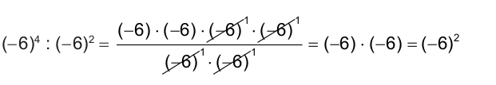Ou seja,
\((-6)^{4} \colon (-6)^{2} = (-6)^{4-2} = (-6)^{2}\)
UNIDADE 2 - CAPÍTULO 3
68
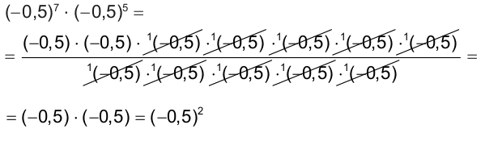
Ao dividirmos potências de mesma base, conserva-se a base e subtraem-se os expoentes.
Esta propriedade pode nos auxiliar a entender por que um número elevado ao expoente 0 (zero) é igual a 1. Observe:
► \(6^{2} \colon 6^{2} = 36 \colon 36 = 1\)
Aplicando a propriedade de divisão de potências de mesma base, temos:
► \(6^{2} \colon 6^{2} = 6^{2-2} = 6^{0}\)
Como as divisões são iguais, o resultado da divisão deve ser o mesmo. Logo, temos que:
► \(6^{0} = 1\)
Potência de uma potência
\( \left[\left(-2\right)^{3}\right]^{4} = (-2)^{3} \cdot (-2)^{3} \cdot (-2)^{3} \cdot (-2)^{3} = (-2)^{3+3+3+3} = (-2)^{12} \)
Ou seja,
\( \left[\left(-2\right)^{3}\right]^{4} = (-2)^{3 \cdot 4} = (-2)^{12} \)
\( \left[\left(\dfrac{1}{3}\right)^{2}\right]^{3} = \left(\dfrac{1}{3}\right)^{2} \cdot \left(\dfrac{1}{3}\right)^{2} \cdot \left(\dfrac{1}{3}\right)^{2} = \left(\dfrac{1}{3}\right)^{2+2+2} = \left(\dfrac{1}{3}\right)^{6} \)
Ou seja,
\( \left[\left(\dfrac{1}{3}\right)^{2}\right]^{3} = \left(\dfrac{1}{3}\right)^{2 \cdot 3}= \left(\dfrac{1}{3}\right)^{6} \)
Na potência de uma potência, repetimos a base e multiplicamos os expoentes.
UNIDADE 2 - CAPÍTULO 3
69
Expressões numéricas
Para resoluções de expressões numéricas que envolvam potenciação, divisão, multiplicação, adição e subtração de números negativos e positivos, seguimos a mesma forma de resolução das expressões numéricas formadas por números naturais.
Primeiramente, resolve-se a potenciação; na sequência, a divisão ou mul- tiplicação na ordem em que aparecem; em seguida, a adição e subtração, tam- bém respeitando a ordem em que aparecem.
Se na expressão houver parênteses, colchetes e chaves devemos resolver:
1.° parênteses
2.° colchetes
3.° chaves
Vejamos alguns exemplos:
a) \((-5)^{2} + (-2)^{5} - 3^{2} - (-4)^{0} =\)
= 25 − 32 − 9 − 1 =
= −7 − 9 − 1 =
= − 16 − 1 =
= − 17
b) \((1,2)^{2} - (0,2)^{3} + (1,96) \colon (1,4) - (6,1)^{1}\)
= 1,44 − 0,008 + 1,4 − 6,1 =
= 1,432 + 1,4 − 6,1 =
= 2,832 − 6,1 =
= − 3,268
c)
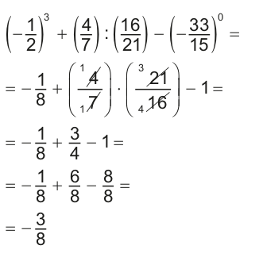d)
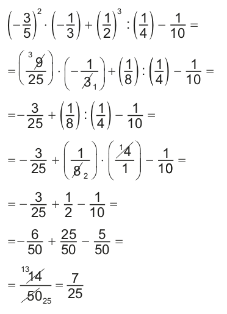UNIDADE 2 - CAPÍTULO 3
70
1. Calcule mentalmente e anote a resposta em seu caderno.

a) \(-5)^{2}\)
b) \(-3)^{3}\)
c) \(+10)^{4}\)
d) \(-3^{3}\)
e) \((+8)^{2}\)
f) \((-12)^{0}\)
g) \((-1)^{20}\)
h) \(-1^{12}\)
i) \((-10)^{5}\)
j) \((+7)^{2}\)
k) \((-1)^{10}\)
l) \(-1^{2}\)
2. Em seu caderno, represente por meio de potência a quantidade de cubinhos que formam cada cubo. A seguir, calcule quantos cubinhos foram usados para formar cada cubo.
a)
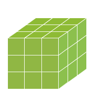b)
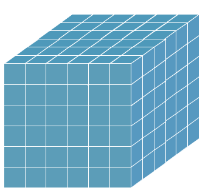c)
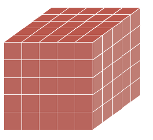d)
3. Escreva na forma de potência e calcule:
a) o quadrado de - 5
b) o cubo de - 4
c) - 2 elevado ao expoente 8
d) 10 elevado ao expoente 5
4. Resolva as potências em seu caderno.
a) \(\left( -\dfrac{1}{2} \right)^{7} \)
b) \((-0,1)^{5} \)
c) \(\left( -\dfrac{5}{7} \right)^{2} \)
d) \(\left( -\dfrac{9}{10} \right)^{1} \)
e) \(\left( -\dfrac{11}{13} \right)^{0} \)
f) \((1,2)^{2} \)
g) \(\left( +\dfrac{3}{4} \right)^{3} \)
h) \((-0,5)^{3} \)
5. Aplicando as propriedades de potenciação que você estudou, escreva os resultados na forma de uma só potência.
a) \((-2)^{3} \cdot (-2)^{4} \cdot (-2)^{1}\)
b) \(\left( -\dfrac{2}{3} \right)^{5} \colon \left( -\dfrac{2}{3} \right)^{2}\)
c) \(\left[ \left( -0,5 \right)^{3}\right]^{4}\)
d) \(\left(\dfrac{3}{5}\right)^{2} \cdot \left(\dfrac{3}{5}\right)^{2} \colon \left(\dfrac{3}{5}\right)^{3} \)
e) \(7^{5} \cdot 7 \colon 7^{2} \)
f) \(\left[ \left( -\dfrac{1}{7} \right)^{4}\right]^{2}\)
ENCONTRE SOLUÇÕES
UNIDADE 2 - CAPÍTULO 3
71
6. Qual deve ser o valor pelo qual deve- mos substituir o símbolo ■ para que a igualdade seja verdadeira?
a) \((-0,2)^{6} \cdot (-0,2)^{■} = (-0,2)^{9}\)
b) \((1,7)^{■} \cdot (1,7)^{4} = (1,7)^{6}\)
c) \((-9)^{■} \cdot (-9)^{2} \colon (-9)^{5} = (-9)^{5}\)
d) \(\left[ \left(-15 \right)^{5}\right]^{■} = (-15)^{20} \)
e) \((-5)^{7} \cdot (-5)^{3} \cdot (-5)^{■} = (-5)^{12}\)
f) \((1,3)^{10} \colon (1,3)^{■} = (1,3)^{6}\)
7. Resolva as expressões numéricas em seu caderno.
a) \(\left(-\dfrac{1}{3}\right)^{2} \colon \left(-\dfrac{2}{3}\right)^{3} \)
b) \(\left(\dfrac{1}{4}\right)^{3} + \left(-\dfrac{1}{3}\right) \cdot \left(\dfrac{9}{2}\right) - \dfrac{3}{4} \)
c) \(\left(\dfrac{2}{5}\right)^{2} - \left(-\dfrac{11}{13}\right)^{0} + \left(-\dfrac{1}{3}\right)^{1}\)
d) \(\left(\dfrac{1}{2} + \dfrac{1}{3}\right)^{2} - \left(-\dfrac{15}{17}\right)^{0} + 2\)
8. (OBMEP) Qual é o valor de \(2^{6} + 2^{6} + 2^{6} + 2^{6} - 4^{4}\)?
a) 0
b) 2
c) 4
d) \(4^{2}\)
e) \(4^{4}\)
9. (OBMEP) Qual é a metade do número \(2^{12} + 3\) x \(2^{10}\)?
a) \(2^{6} + 3\) x \(2^{5}\)
b) \(2^{6} + 3\) x \(2^{10}\)
c) \(2^{11} + 3\) x \(2^{5}\)
d) \(2^{11}\) x 7
e) \(2^{9}\) x 7
Raiz quadrada
Para resolver a situação indicada na ilustração, utilizamos uma operação chamada radiciação.
Observe:
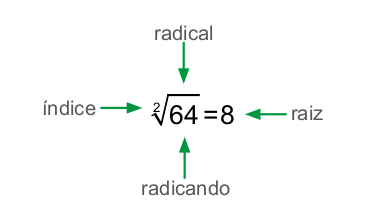UNIDADE 2 - CAPÍTULO 3
72
Nem todos os números positivos possuem raiz quadrada exata. Vejamos alguns exemplos de números positivos que apresentam raiz quadrada exata.
a) \(\sqrt{25}\) = 5 , pois 5² = 25
b) \(\sqrt{81}\) = 9 , pois 9² = 81
c) \(\sqrt{1,44}\) = 1,2 , pois (1,2)² = 1,44
d) \(\sqrt{\dfrac{3}{9}} = \dfrac{2}{3}\), pois \(\left( \dfrac{2}{3}\right)^{2} = \dfrac{4}{9}\)
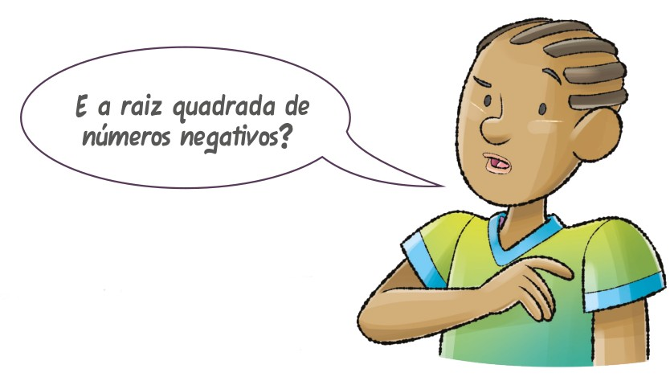
1. Juntamente com um colega e com o auxílio de uma calculadora, tentem calcular a raiz quadrada dos seguintes números:
► \(\sqrt{-25}\)
► \(\sqrt{-1,44}\)
► \(\sqrt{-16}\)
a) O que apareceu no visor? Troque ideias com seu colega e expliquem por que isto ocorreu.
Vejamos uma situação na qual precisamos calcular a raiz quadrada exata de um número positivo.
Mariana irá fazer uma colcha quadrada de 2,56 m². Para o acabamento da colcha ela irá utilizar uma fita de cetim. Quantos metros de fita serão necessários para esse acabamento?
Como a colcha é quadrada, precisamos calcular a medida do lado do quadrado para, então, calcular a medida do contorno da colcha, ou seja, o seu perímetro.
Para sabermos a medida do lado do quadra- do, precisamos saber qual o número que elevado ao quadrado é igual a 2,56. Dessa forma, utilizaremos a operação inversa da potenciação para realizar esse cálculo, ou seja, a radiciação.
\(\sqrt{-16} = \sqrt{\dfrac{256}{100}} = \dfrac{16}{10} = 1,6\)
Logo, a medida do lado da colcha é igual a 1,6 m.
UNIDADE 2 - CAPÍTULO 3
73
Agora, vamos calcular a medida do contorno dessa colcha.
4 ∙ 1,6 = 6,4
Portanto, ela irá precisar de 6,4 m de fita de cetim para fazer o acabamento da colcha.
Expressões numéricas
Vamos acrescentar mais uma operação às expressões numéricas estudadas anteriormente: a raiz quadrada.
Resolve-se na seguinte ordem:
► a raiz quadrada ou potenciação, na sequência em que aparecem;
► a divisão ou multiplicação na sequência em que aparecem;
► a adição e subtração, também respeitando a sequência em que aparecem.
Lembrando ainda que quando houver parênteses, colchetes e chaves, deve-se respeitar esta ordem, respectivamente, para resolver a expressão.
Vejamos alguns exemplos:
a) \(\sqrt{1,44} + 0,5 - (-1,3 + 0,2) = \)
= 1,2 + 0,5 − (−11)=
= 1,2 + 0,5 + 11=
= 2,8
c)
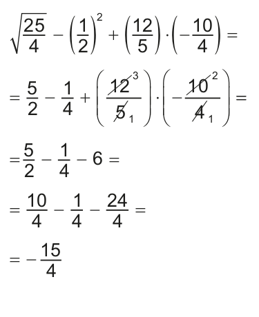b) \(-2,5 - \sqrt{0,81} \colon 0,3 + \sqrt{2,25} - 0,7 =\)
= −2,5 −0,9:0,3 +1,5 − 0,7 =
= −2,5 −3 + 1,5 − 0,7 =
= −4,7
d)
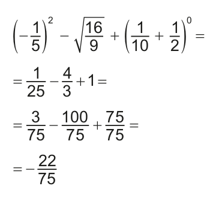UNIDADE 2 - CAPÍTULO 3
74
ENCONTRE SOLUÇÕES
1. Determine a medida do lado de um quadrado que tem 196 cm² de área e, em seguida, calcule o seu perímetro.
2. Calcule em seu caderno:
a) \(\sqrt{82}\)
b) \(\sqrt{121}\)
c) \(\sqrt{49}\)
d) \(\sqrt{1}\)
e) \(\sqrt{400}\)
f) \(\sqrt{0}\)
3. Joaquim possui uma área quadrada com 1 600 m². Ele resolveu cercá-la com arame farpado dando 4 voltas em torno dela. Quantos metros de arame farpado ele terá que comprar?
4. Resolva em seu caderno:
a) \(\sqrt{0,04}\)
b) \(\sqrt{1,44}\)
c) \(\sqrt{0,16}\)
d) \(\sqrt{0,49}\)
e) \(\sqrt{0,64}\)
f) \(\sqrt{1,69}\)
g) \(\sqrt{\dfrac{25}{100}}\)
h) \(\sqrt{\dfrac{4}{81}}\)
i) \(\sqrt{\dfrac{1}{9}}\)
j) \(\sqrt{\dfrac{121}{16}}\)
5. Calcule o valor das expressões numéricas em seu caderno.
a) \(\sqrt{\dfrac{4}{10}} \colon \dfrac{1}{2} + \left( \dfrac{1}{2} - \dfrac{1}{3}\right)\)
b) \(\left( -\dfrac{1}{3}\right)^{3} \colon \dfrac{1}{9} + \sqrt{\dfrac{1}{36}} - \left( -\dfrac{1}{2}\right)^{2}\)
c) \(\sqrt{0,04} + 1,6 - (0,5)^{2} \colon (0,5)\)
d) \(\sqrt{0,5 + \sqrt{0,25}}\)
e) \(\sqrt{\dfrac{9}{25}} - \left( \dfrac{2}{5} - \dfrac{1}{4}\right) \cdot \left( -\dfrac{20}{3}\right) + \sqrt{\dfrac{49}{4}} \)
f) \( -\dfrac{2}{5} - \sqrt{\dfrac{1}{225}} - \left( \dfrac{1}{6} + \dfrac{1}{2}\right) \colon \dfrac{1}{12} \)
6. (OBMEP) Um número é um quadrado perfeito se é igual a um número inteiro elevado ao quadrado. Por exemplo, 25 = 5², 49 = 7² e 625 = 25² são quadrados perfeitos. Qual é o menor número pelo qual devemos multiplicar 120 para obter um quadrado perfeito?
a) 10
b) 15
c) 20
d) 30
e) 35
UNIDADE 2 - CAPÍTULO 3
75
PROBABILIDADE E ESTATÍSTICA
► Médias
Durante a aula de Educação Física, a professora de Luciana anotou a altura das meninas da turma e organizou os dados em um quadro. Observe:
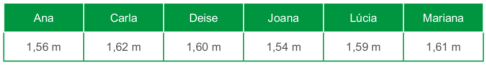1. Troque ideias com um colega e expliquem, em seus cadernos, como podemos calcular a altura média das meninas dessa turma.
2. Após a explicação, calculem a altura média das meninas dessa turma.
UNIDADE 2 - CAPÍTULO 3
76
Agora, observem esta outra situação:
Na escola em que Joana estuda, a média anual é calculada por meio de uma média aritmética ponderada, ou seja, os pesos das notas trimestrais são diferentes. Ela está pensativa porque não conseguiu fazer o cálculo da sua média anual nas disciplinas de Língua Portuguesa e Matemática.
Vamos verificar como podemos fazer esse cálculo. Veja as médias trimestrais que Joana obteve em Língua Portuguesa e Matemática.
Nessa escola, a média do 1.° trimestre tem peso 3, a do 2.° trimestre peso 3 e a do 3.° trimestre peso 4.
Vejamos como realizar esse cálculo para a média anual de Língua Portuguesa.
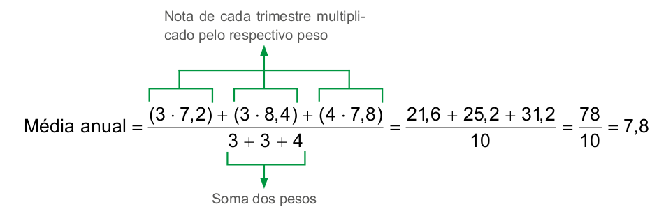Portanto, a média anual de Joana em Língua Portuguesa foi 7,8.
No cálculo de uma média ponderada, devemos realizar a divisão entre a soma obtida dos produtos de cada valor com seus respectivos pesos pela soma dos pesos.
3. Troque ideias com um colega e verifiquem como calcular a média anual de Joana na disciplina de Matemática. Em seguida, calculem.
UNIDADE 2 - CAPÍTULO 3
77
4. Em um concurso público a prova de Língua Portuguesa tem peso 2, a Redação peso 3 e a de Matemática peso 2. Para ser aprovado, o candidato precisa ter uma média igual ou superior a 7. Lúcio obteve as seguintes notas nas provas:

► Lúcio foi aprovado nesse concurso?
5. Mário fez uma pesquisa de um determinado produto de limpeza em 20 lugares diferentes. Ele representou no gráfico abaixo o resultado da sua pesquisa.
![Gráfico de barras verticais. Preços encontrados. Eixo horizontal, referente a preços em reais, apresentados pelos valores: 12, 14, 13 e 13,54. Eixo vertical, referente ao número de lugares pesquisados, apresentados em uma escala com início em 0, a partir da base, e término em 8. O gráfico exibe quatro barras verticais. A barra 12 reais, em amarelo, corresponde a 8 lugares. A barra 14, em vermelho, quatro lugares. A barra 13, em verde, seis lugares. A barra 13,54, em azul, dois lugares. Fonte: dados coletados por Mário.](../../resources/images/unidade2/capitulo3/imagem25.png)
► Determine o preço médio desse produto.
6. (ESAF) Numa empresa, vinte operários têm salário de R$ 4.000,00 mensais; dez operários têm salário de R$ 3.000,00 mensais e trinta têm salário de R$ 2.000,00 mensais. Qual é o salário médio desses operários:
a) R$ 2.833,33
b) R$ 2.673,43
c) R$ 3.234,67
d) R$ 2.542,12
e) R$ 2.235,67
UNIDADE 2 - CAPÍTULO 3
78
7. (FCC) Considere um grupo formado por cinco amigos com idade de 13, 13, 14, 14 e 15 anos. O que acontece com a média de idade desse grupo, se um sexto amigo com 16 anos juntar-se ao grupo?
a) permanecerá a mesma
b) diminuiu 1 ano
c) aumenta 12 anos
d) aumenta mais de 1 ano
e) aumenta menos de 1 ano
RELEMBRE
1. (Saresp) Observe atentamente as retas ordenadas a seguir:
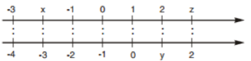A ordenação correta entre os números representados pelas letras x, y e z é
a) x < y < z
b) x < z < y
c) y < x <z
d) y <z < x
2. Em relação a Londres, o fuso horário da cidade de Brasília é de -3 horas e de Hong Kong é +8 horas. Então, quando em Brasília for 9 horas, que horas serão em Hong Kong?
3. (UTFPR) A minha conta bancária estava com um saldo negativo de R$ 480,00. No dia 02/04/2014, foi depositado meu salário no valor de R$ 3.340,00. No dia 03/04/2014, eu paguei R$ 120,00 de luz, R$ 230,00 de TV a cabo, R$ 100,00 de telefone e internet, R$ 1.200,00 de aluguel, R$ 720,00 do financiamento do carro e R$ 1.000,00 que estava devendo a um amigo. Depois de pagas todas as contas, minha conta em 05/04/2014 estará:
a) devendo R$ 450,00.
b) com saldo de R$ 450,00.
c) devendo R$ 510,00.
d) com saldo de R$ 510,00.
e) zerada.
4. Uma árvore genealógica é um histórico dos antepassados de uma família. Por meio dela podemos conhecer quem foram nossos avós, bisavós, trisavós, tataravós e assim sucessivamente. Manoel está curioso para saber quantos tataravós ele teve. Ajude Manoel a fazer este cálculo. Represente por meio de uma potência a quantidade de tataravós e, em seguida, calcule.
5. (UTFPR) Viviane comprou 5 camisetas de mesmo preço por R$ 125,30. Qual o preço de cada camiseta?
a) R$ 22,60.
b) R$ 21,06.
c) R$ 25,60.
d) R$ 25,06.
e) R$ 23,60.
6. O número de bactérias em uma determinada cultura cresce 8 vezes a cada hora. Na amostra inicial dessa cultura havia 64 bactérias. Após 3 horas, quantas bactérias haverá nessa cultura? Represente o resultado por meio de uma potência de base 2.
UNIDADE 2 - CAPÍTULO 3
79
7. A área de um tapete quadrado mede 2,25 m². Qual é o perímetro desse tapete?
8. (FEI-SP) O valor da expressão \((-2) + (-3) \cdot \left( -\dfrac{1}{2} \right) \colon (-3)\) é:
a) \(-\dfrac{5}{6}\)
b) \(\dfrac{5}{6}\)
c) \(-\dfrac{5}{2}\)
d) \(-\dfrac{5}{3}\)
e) n.d.a
9. (UFRN) Simplificando-se a expressão (0,012 + 1,5):16,8, obtém-se:
a) 0,28
b) 0,09
c) 0,14
d) 0,15
10. (PUC-RJ) A expressão \( \left( \dfrac{1}{2}\cdot \dfrac{9}{7} \right) \colon \left( \dfrac{2}{4} - \dfrac{1}{6} \right) +3 \) representa um número compreendido entre:
a) 2 e 3
b) 3 e 4
c) 4 e 5
d) 5 e 6
e) n.d.a.
11. (PUC-SP) O valor da expressão\(\left[ \dfrac{-10 + 5 -(-4)}{\sqrt{9} + (-2)} \right]^{3}\) é
a) -1
b) -2
c) 2
d) 1
e) n.d.a.
12. (ENEM) De acordo com a ONU, da água utilizada diariamente,
► 25% são para tomar banho, lavar as mãos e escovar os dentes.
► 33% são utilizados em descarga de banheiro.
► 27% são para cozinhar e beber.
► 15% são para demais atividades.
No Brasil, o consumo de água por pessoa chega, em média, a 200 litros por dia.
O quadro mostra sugestões de consumo moderado de água por pessoa, por dia, em algumas atividades.
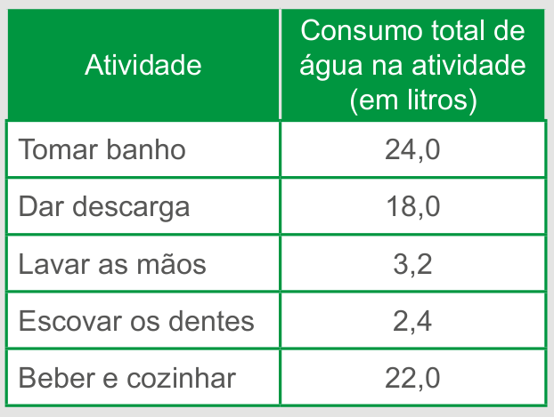Se cada brasileiro adotar o consumo de água indicado no quadro, mantendo o mesmo consumo nas demais atividades, então economizará diariamente, em média, em litros de água:
a) 30,0.
b) 69,6.
c) 100,4.
d) 130,4.
e) 170,0
13. (ACAFE-SC) Calculando o valor da expressão \(\dfrac{2}{5} \colon (1-0,7) + \dfrac{1}{2} \cdot \left( \dfrac{1}{4} - 0,75\right)\) obtemos:
a) \(\dfrac{13}{12}\)
b) \(\dfrac{19}{12}\)
c) \(-\dfrac{13}{100}\)
d) \(\dfrac{4}{3}\)
e) \(-\dfrac{10}{3}\)